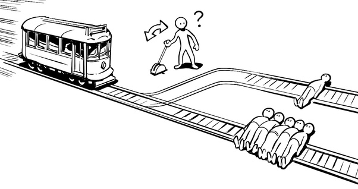

Utilitarian Ethics:
An action is right if it leads to the most happiness for the greatest number of people.
Utilitarian Functions:
A function is worthwhile if it leads to the most usefulness for the greatest number of users.
utilitarian is a package ‘full’ of useful R functions that reduce the day to day pain of using R as experienced by its author. Most of these functions are the result of searching for and not finding exactly what was needed and doing it myself. In the words of a certain pipe-bending robot: “Yeah, well, I’m gonna go build my own R package! With blackjack! And hookers! In fact, forget the R package!”
Current functions:
Sources listed if written by other than Adrian
Package Related
-
usePackage()
- Tries to attach a package, if missing: tries to install it. Source
-
libraries()
- Attach numerous packages at once using bare names, quoted names, or a character vector of names
Addins
-
insertViewAddin()
- To quickly cut a pipeline short and view the tibble at that step. Find in the Addin menu or bind it to something convenient.
-
insertGlimpseAddin()
- To quickly cut a pipeline short and glimpse the tibble at that step. Find in the Addin menu or bind it to something convenient.
Maths
-
normalize()
- Normalize a numeric vector over a supplied range
Quality of Life
-
%notin%
- Not In. Find out what’s in one vector and… not in another.
Sciences
-
compareSeq()
- Produces a table showing all the variants between two DNAString objects
-
read_sam()
- Read in SAM file as tibble
-
read_sam_headers()
- Read in SAM file headers as list of two tables: reference lengths and mapping information.
-
tidy_cigar()
- Split and tidy CIGARS from read_sam’s tibble. Groups by QNAME and RNAME
-
plot_cigar()
- Plot one Query’s CIGAR data, facet by RNAME, and colour by Operation
-
plot_all_cigars()
- Plot all Queries from tidied cigar table, facet by Reference, and colour by Operation
-
sam_to_fasta()
- Write SAM Query sequences to file as fasta with with QNAME as identifier
Rectangular
-
exposeDupes()
- Find duplicated IDs in a tibble and expose what variables cause them